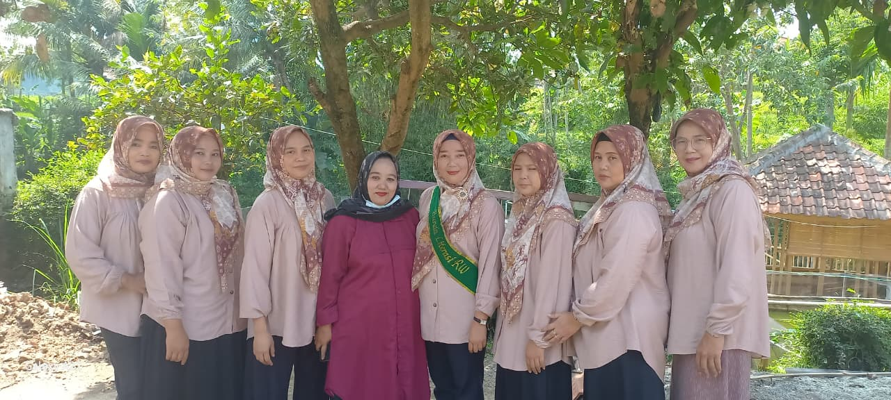

NeglasariNews

Kegiatan Posyandu Cempaka 4, Rw 04 Desa Neglasari
Cibeunying Legok - Kegiatan Posyandu Cempaka 4, yang berlokasi di RW 04 Desa Neglasari, Kecamatan Majalaya, kembali digelar pada Rabu (8/10/2025). Acara ini dihadiri ibu - ibu, balita dan lansia yang datang untuk melakukan pemeriksaan kesehatan rutin.
Kegiatan dimulai pukul 08.00 WIB dengan agenda utama penimbangan balita serta pemeriksaan kesehatan lansia. Para kader Posyandu melayani warga dengan ramah dan penuh semangat.
“Kami sangat senang karena antusiasme warga semakin meningkat setiap bulannya. Posyandu bukan hanya untuk menimbang anak, tapi juga menjadi sarana edukasi bagi ibu-ibu tentang pentingnya gizi dan kesehatan keluarga, dan pada kegiatan hari ini tercatat 105 balita yang sudah datang ke posyandu.” ujar Ibu Eka, Kader Posyandu Cempaka 4.
Selain penimbangan balita, kegiatan diisi juga dengan pemeriksaan kesehatan bagi para ibu-ibu dan lansia, seperti pemeriksaan tekanan darah, cek gula dan kolesterol.
“Kami berharap masyarakat terus aktif datang ke Posyandu, karena kegiatan ini penting untuk memantau kesehatan anak dan lansia secara berkelanjutan,” tambah Ibu Eka.
Di akhir kegiatan, para peserta mendapatkan paket makanan tambahan (PMT) berupa bubur kacang hijau dan susu untuk balita serta vitamin untuk para lansia.
Kegiatan Posyandu ini rutin diadakan tiap bulan di seluruh Rw yang ada di desa Neglasari, dan merupakan salah satu bentuk nyata dari program pemerintah desa dalam mendukung peningkatan derajat kesehatan masyarakat melalui pelayanan terpadu di tingkat RW.
Neglasari-News, 8 Oktober 2025 | red.